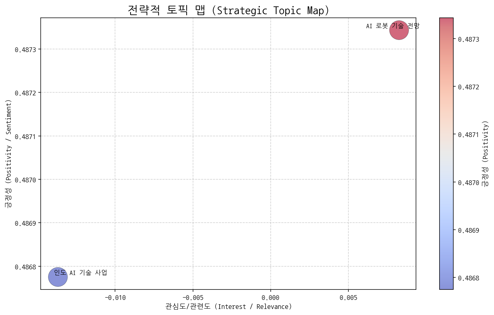
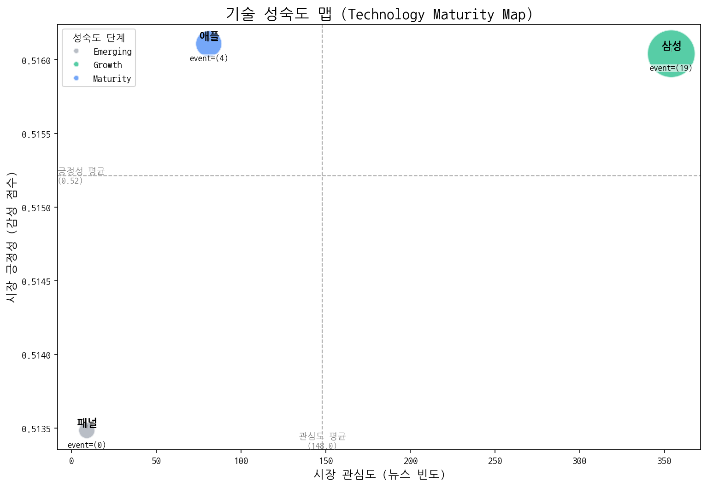
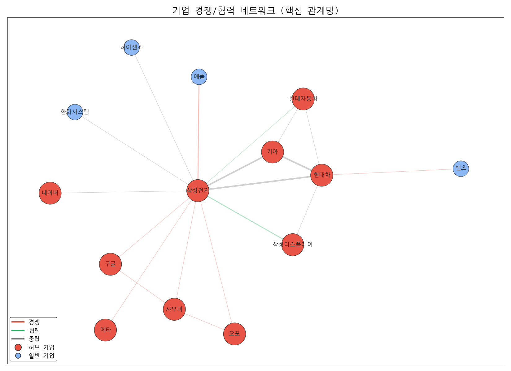
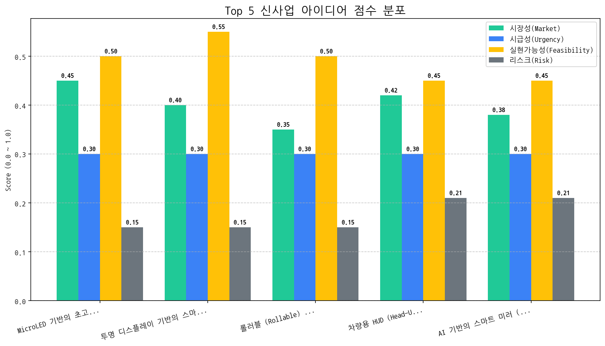

작성일: 2024년 10월 27일 (예시) 작성자: [당신의 이름], 최고 전략 책임자 (CSO)
인도 AI 기술 사업 부상 및 AI 로봇 기술 전망 강화: 인도를 중심으로 AI 기술 사업에 대한 관심이 급증하고 있으며, AI 로봇 기술의 미래 전망이 밝게 예측되고 있습니다. 이는 새로운 시장 기회와 동시에 기술 경쟁 심화를 예고합니다.
디스플레이 기술 성숙도 변화: 패널 기술은 여전히 Emerging 단계에 머물러 있지만, 삼성은 Growth 단계, 애플은 Maturity 단계로 진입했습니다. 이는 당사 기술 경쟁력 확보를 위한 노력이 시급함을 시사합니다.
VR/AR 시장 성장 가능성: MicroLED 기반 초고화질 VR/AR 헤드셋 디스플레이가 최우선 신사업 아이디어로 선정된 점은, VR/AR 시장의 성장 가능성과 함께 초고화질 디스플레이에 대한 수요 증가를 의미합니다.
기회 요인:
위협 요인:
인도 AI 시장 진출 전략 수립: 인도 시장의 특성과 수요를 분석하고, 당사의 디스플레이 기술을 활용한 맞춤형 제품 및 서비스 개발 전략을 수립합니다. 잠재 파트너사 발굴 및 협력 방안 모색을 포함합니다.
MicroLED 기반 VR/AR 헤드셋 디스플레이 개발 가속화: 최우선 신사업 아이디어인 MicroLED 기반 초고화질 VR/AR 헤드셋 디스플레이 개발을 위한 R&D 투자를 확대하고, 개발 로드맵을 구체화합니다. 기술적 난제를 해결하기 위한 외부 협력 및 기술 제휴를 적극적으로 추진합니다.
패널 기술 경쟁력 강화: 패널 기술의 혁신을 위한 R&D 투자를 확대하고, 차세대 패널 기술 개발 로드맵을 수립합니다. 외부 기술 협력 및 M&A를 통해 패널 기술 경쟁력을 강화합니다.

알겠습니다. 제공된 토픽 데이터와 요청하신 분석 내용을 바탕으로 시장 전략 컨설팅 보고서를 작성해 드리겠습니다.
주력 영역: (데이터 부족으로 분석 불가) 현재 제공된 데이터로는 시장 관심도와 긍정성을 판단할 기준이 없어 주력 영역을 특정할 수 없습니다. 더 많은 데이터, 특히 정량적인 지표(예: 관련 기사 수, 소셜 미디어 언급량, 시장 조사 결과)가 필요합니다.
기회 영역: (데이터 부족으로 분석 불가) 현재 제공된 데이터로는 시장 관심도와 긍정성을 판단할 기준이 없어 기회 영역을 특정할 수 없습니다. 긍정적인 전망이 담긴 뉴스이지만, 시장의 실제 관심도가 낮은 영역이 여기에 해당될 수 있습니다.
경쟁/위험 영역: (데이터 부족으로 분석 불가) 현재 제공된 데이터로는 시장 관심도와 긍정성을 판단할 기준이 없어 경쟁/위험 영역을 특정할 수 없습니다. 높은 관심도를 받지만, 경쟁이 심하거나 부정적인 이슈가 있는 영역이 여기에 해당될 수 있습니다.
틈새/장기 영역: (데이터 부족으로 분석 불가) 현재 제공된 데이터로는 시장 관심도와 긍정성을 판단할 기준이 없어 틈새/장기 영역을 특정할 수 없습니다. 낮은 관심도와 낮은 긍정성을 가진, 즉각적인 수익을 기대하기 어렵지만 장기적인 관점에서 지켜봐야 할 영역입니다.
전제: 데이터 부족으로 인해 4분면 분석 자체가 어려워, 아래 액션 아이템은 제한적인 정보만을 가지고 제안된 것입니다. 실제 실행 전에 반드시 추가적인 시장 조사가 필요합니다.
[선정된 '기회' 토픽명: AI 로봇 기술 전망]: 전주를 중심으로 AI, 로봇 기술 융합이 이루어지고 있다는 점에 주목하여, 전주 지역의 관련 기술 개발 동향 및 정부 지원 정책을 상세히 조사하고, 해당 지역의 기술 생태계와 협력 가능성을 타진합니다.
[선정된 '위험' 토픽명: 인도 AI 기술 사업]: LG를 포함한 여러 브랜드가 인도 시장에 진출하는 것은 기회이지만, 경쟁 심화 가능성과 관련된 위험 요소를 고려해야 합니다.
중요: 위 분석은 제한적인 데이터에 기반하고 있으며, 실제 시장 상황과 다를 수 있습니다. 실행 가능한 전략 수립을 위해서는 추가적인 시장 조사가 필수적입니다. 특히, 각 토픽에 대한 시장 관심도와 긍정성을 객관적으로 측정할 수 있는 지표(기사 수, 소셜 미디어 언급량, 시장 조사 데이터 등)를 확보하는 것이 중요합니다.
| 토픽명 | 요약 | 핵심 키워드 |
|---|---|---|
| 인도 AI 기술 사업 | LG를 포함한 여러 브랜드가 인도에서 AI, 반도체, 패션 등의 기술 사업을 확장하는 가장 중요한 시기임을 나타냅니다. | ai, 기술, 브랜드 |
| AI 로봇 기술 전망 | 전주를 중심으로 AI, 로봇, LED, 반도체 기술이 융합된 디스플레이 관련 판매 및 기술 동향과 미래 전망을 다룬 뉴스. | ai, 동기, 디스플레이 |

| 기술 | 단계 | 판단 근거 | |:-----|:---------|:---------------------------------------------------------------------------------------| | 패널 | Emerging | 뉴스 언급 빈도가 낮고, 투자, 출시, 수주 등 주요 이벤트 발생이 없어 시장 성숙도가 초기 단계로 판단됩니다. | | 삼성 | Growth | 비교적 높은 뉴스 언급 빈도와 긍정적인 시장 감성 점수, 출시 이벤트의 빈번한 발생은 삼성 기술이 성장기에 있음을 나타낸다. | | 애플 | Maturity | 애플은 꾸준한 출시를 통해 시장에 안정적으로 자리 잡았으나, 투자나 수주와 같은 혁신적인 성장을 위한 이벤트가 부족하여 성숙기에 접어든 것으로 판단됩니다. || 기업 | 핵심 집중 토픽 | 전략 방향성 해석 |
|---|---|---|
| 삼성전자 | 인도 AI 기술 사업, AI 로봇 기술 전망 | 삼성전자는 인도 시장을 중심으로 AI 기술 사업을 확장하고, AI 로봇 기술 개발에 집중하여 미래 성장 동력을 확보하려는 단기 전략을 추진하고 있습니다. |
| LG디스플레이 | 인도 AI 기술 사업, AI 로봇 기술 전망 | LG디스플레이는 인도 AI 기술 사업 진출 및 AI 로봇 기술 전망에 주목하며, 디스플레이 기술을 AI와 로봇 분야에 접목하여 새로운 B2B 시장 기회를 창출하고 관련 기술 경쟁력을 강화하려는 단기 전략을 추진하고 있습니다. |
| LG전자 | 인도 AI 기술 사업, AI 로봇 기술 전망 | LG전자는 인도 시장을 중심으로 AI 기술 사업을 확장하고, AI 로봇 기술을 미래 성장 동력으로 삼아 B2B 시장에서 혁신적인 솔루션 제공을 목표로 하고 있습니다. |

| 주요 관계 | 유형 | 액션 아이템 제안 |
|---|---|---|
| 기아 ↔ 현대차 | neutral | 현대/기아 전기차 플랫폼 공유 시너지 분석 및 대응 전략 준비 |
| 삼성전자 ↔ 현대차 | neutral | 삼성-현대차 협력/경쟁 동향 주시, 시나리오별 대응 전략 준비. |
| 기아 ↔ 삼성전자 | neutral | 기아-삼성전자 협력 가능성 타진 및 시너지 검토. |
두 기업이 함께 언급된 문맥 안에서, 키워드의 빈도가 경쟁 > 협력인 경우 'rivalry', 반대의 경우 'partnership'으로 분류
| 아이디어 | 가치 제안 | 총점 |
|---|---|---|
| MicroLED 기반의 초고화질 (12K) VR/AR 헤드셋 디스플레이 | 초고화질 (12K) 해상도 및 높은 주사율, MicroLED 기술 기반의 높은 밝기, 명암비, 색재현율, 얇고 가벼운 디자인, 경쟁사 대비 뛰어난 몰입감과 편안한 착용감 제공 | 3.5 |
| 투명 디스플레이 기반의 스마트 윈도우 (Smart Window) & 에너지 하베스팅 (Energy Harvesting) 융합 솔루션 | 에너지 자립형 스마트 윈도우 솔루션, 투명 디스플레이를 통한 정보 제공 및 광고 효과, 건물 에너지 효율 향상, 쾌적한 실내 환경 조성, 경쟁사 대비 뛰어난 투명도와 발전 효율 제공 | 3.4 |
| 롤러블 (Rollable) 디스플레이 기반의 이동형 광고 플랫폼 | 높은 이동성과 설치 용이성, AI 기반의 타겟 광고 및 실시간 광고 효과 분석 기능, 다양한 형태의 광고 콘텐츠 구현, 경쟁사 대비 뛰어난 내구성과 안정성 제공 | 3.2 |
| 차량용 HUD (Head-Up Display) 증강현실 (AR) 글래스 일체형 솔루션 | HUD와 AR 글래스 통합으로 넓은 시야각과 풍부한 정보 제공, AI 기반의 실시간 객체 인식 및 상황 판단 정보 제공, 운전자 맞춤형 인터페이스, 경쟁사 대비 뛰어난 착용감과 배터리 효율성 제공 | 3.1 |
| AI 기반의 스마트 미러 (Smart Mirror) & 디지털 캔버스 (Digital Canvas) 융합형 디스플레이 | AI 기반의 개인 맞춤형 정보 제공 및 건강 관리 기능, 예술 작품 감상 및 디지털 아트 전시 기능, 인테리어 효과 극대화, 경쟁사 대비 뛰어난 디자인과 사용자 경험 제공 | 2.9 |

#### [아이디어 검증: 2주 Action Plan] | Hypothesis | Target | KPI | Owner | Due | |:-------------------------------------------------------------------------------------------------------------------------------------------------------------------------|:----------------------------------------------------------------------|:--------------------------------------------------------------------------------------------------------------------------|:--------|:-----------| | 북미 빅테크 기업 (VR/AR 헤드셋 제조사)은 MicroLED 기반 12K VR/AR 헤드셋 디스플레이가 기존 제품 대비 몰입감 향상에 실질적인 기여를 한다고 판단하여, 기술 도입 의향을 보일 것이다. | 북미 빅테크 기업 (VR/AR 헤드셋 제조사) 3곳의 기술 담당 의사결정권자 (CTO, VP of Engineering 등) | 3곳의 기술 담당 의사결정권자 중 2곳 이상으로부터 NDA 체결 및 기술 데모 요청 확보 | 사업개발팀 | 2025-11-04 | | MicroLED 기반의 12K VR/AR 헤드셋 디스플레이 시제품 제작에 필요한 핵심 부품 (MicroLED 칩, 드라이버 IC, 광학 엔진)의 기술적 제약 및 비용을 고려했을 때, 목표 스펙 (12K 해상도, 높은 밝기, 명암비, 색재현율) 달성이 가능한 기술 로드맵을 6개월 내에 수립할 수 있다. | MicroLED 칩 제조사, 광학 엔진 개발사, 디스플레이 구동 IC 설계 전문 기업 (각 2개사 이상) | 각 분야별 파트너사로부터 기술 협력 및 개발 견적 확보 완료, 이를 기반으로 한 기술 로드맵 초안 작성 완료 | 기술기획팀 | 2025-11-04 | | 초고화질 VR/AR 경험에 대한 소비자 니즈가 존재하며, 특히 12K 해상도를 제공하는 MicroLED 기반 VR/AR 헤드셋에 대한 잠재적 수요가 경쟁 제품 대비 높을 것이다. | VR/AR 헤드셋 사용자 그룹 (온라인 커뮤니티, 포럼 등) 3곳 이상, 기술 리뷰어 5명 이상 | 온라인 설문조사 참여자 100명 이상 확보, 설문조사 결과 70% 이상이 12K 해상도 VR/AR 헤드셋에 대한 긍정적 반응 (구매 의향, 높은 관심도) 표명, 기술 리뷰어 5명 중 3명 이상으로부터 긍정적 평가 확보 | 마케팅팀 | 2025-11-04 |